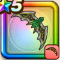

ドラゴンブーメラン
攻略班 7.0点 / かまいたちスライムブロウジバリカシャインスコールレボルスライサー※錬成で強化可能
くわしい特徴
【レベル別習得スキル】 Lv1かまいたち（消費MP：5）エレメント系に威力180%それ以外の系統には130%の体技ダメージを与える Lv10スライムブロウ（消費MP：5）敵全体のスライム系に威力180%それ以外の系統には110%の斬撃ダメージ Lv15ジバリカ（消費MP：12）行動時に大爆発する魔法陣を仕掛け敵1体にジバリア属性の呪文小ダメージを与える Lv20シャインスコール（消費MP：14）光のシャワーをふりそそがせ敵全体に威力160%のデイン属性斬撃ダメージを与える Lv30レボルスライサー（消費MP：21）敵1体に威力300%のバギ属性斬撃ダメージを与え、たまに守備力を1段階下げる Lv35ドラゴン系へのダメージ+5% Lv40ドラゴン系へのダメージ+5% Lv45攻撃時+2%の確率で麻痺を与える Lv50攻撃力+12錬成スキル改1守備減成功率+10%改2レボルスライサー改（消費MP：29）敵1体に威力390％のバギ属性斬撃ダメージを与え、たまに守備力を1段階下げる改3ドラゴン系へのダメージ+10%改4錬成ぶき特別演出解放・メガモン討伐結果発表時に特別演出が追加・武器の見た目に特別なエフェクトが追加 【限界突破スキル】 1凸スキルの斬撃・体技ダメージ+5% 2凸スキルの斬撃・体技ダメージ+5% 3凸スキルの斬撃・体技ダメージ+5% 4凸スキルの斬撃・体技ダメージ+5%